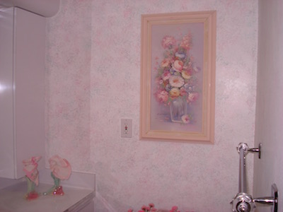
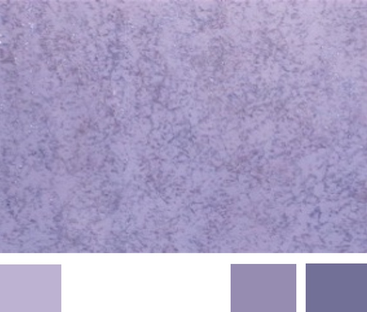
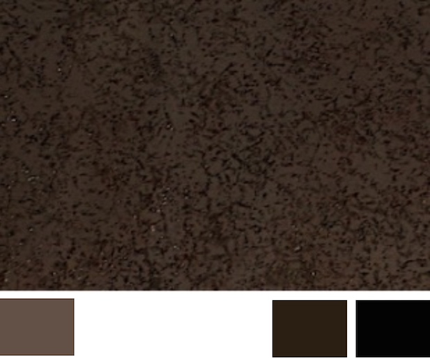
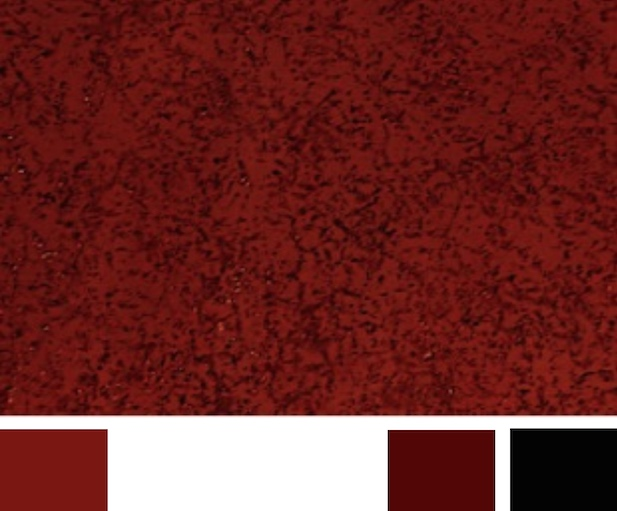
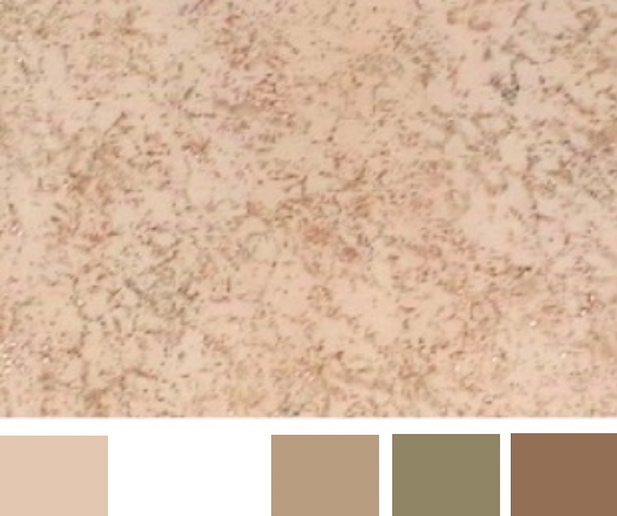
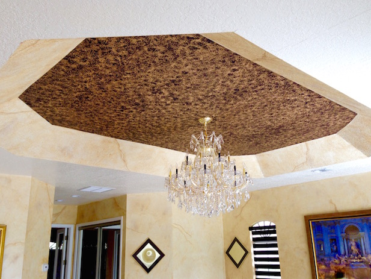

One of the easiest faux painting techniques is Sponging. It is still one of the most popular ones that is used in faux painting. It doesn't require a lot of complicated steps, either. This helps when you are choosing your Faux Finish. However, many methods differ on how to apply the glaze to the sponge and then onto the wall. Especially when sponging in multiple colors, like the wall pictured below.

This technique involves a simple process. After you paint your base coat, you apply glaze or paint to a sea sponge and then usiing various sides of it, you add the imprints to the wall.
Here in the picture above, we used a plain white color for our basecoat and then added pink, teal and purple colors on top, allowing part of the base coat to show thru.
Your base coat should be a satin sheen. Eggshell is another sheen that can be used, but the glaze tends to dry faster with eggshell.
The colors we used on the DVD Workshop are strong, in order to show the imprint of the sponge and to show the technique. However, the sky is the limit for colors to use with this faux finish. Keeping your colors in the same family gives you more of a subtle classy look, whereas using contrasting colors can add drama to your room.
Below are some color suggestions for you to consider.

Base coat (on the left under the picture) is light purple, sponging done in two darker purple colors.

Base coat (on the left under the picture) is a dark tan color, sponging done in black and a dark brown color.

Base coat (on the left under the picture) is a red color, sponging done in black and a red burgundy color.

Base coat (on the left under the picture) is a flesh tone color, sponging done in tan, olive green and brown.

Our BASIC KIT is now on sale for only $39.99 for a limited time. With our Basic faux painting kit, you can learn how to faux paint 10 Techniques like Old World Parchment, Color Washing, Faux Brick, Stone, Ragging and Sponging in multiple colors fast and easy right at home!

We'll send you a link via email for your FREE Faux Painting Color Suggestions and Idea E-book, too. It will come in handy you when it comes to choosing your faux painting colors.
Sponging walls with other methods require you sponge only one color at a time in small sections, blotting the sponge on paper to remove excess paint, each time. This involves climbing up and down a ladder many times, especially if you are painting high areas. In addition, when sponging multiple colors, you must wait till each layer is dry before applying another color.
In the picture below, this simple technique was used in this tray ceiling. We couldn't get a scaffold in the room, therefore, we had to use a ladder. This system saved us many, many trips up and down. You can see by the video at the top of this page, how fast and easy it could be done with the patented (7472450) Triple S Faux Painting System©.

With our system, you just load the Multi Color Faux Palette and carry it up with your sponge and that’s it. You can sponge paint an entire room in the same amount of time that other methods take to faux paint just one wall. With this system, you can sponge paint up to 50 square feet without having to reload. Plus you can faux paint up to 6 different colors at the same time!
In this video above, you can see how easy it is to add textured look to the brown paper used to make fake rocks. Applying all the colors at the same time saves a lot of steps.


(This kit includes Basic, Faux Marble, Faux Wood Kit and tools for texturing)
*FREE Priority Shipping and Color Idea E-book